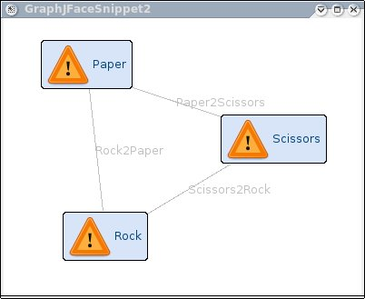

Zest is visualization toolkit for Eclipse. The primary goal of Zest is to make graph based programming easy. Using Zest, Graphs are considered SWT Components which have been wrapped using standard JFace viewers. This allows developers to use Zest the same way they use JFace Tables, Trees and Lists.
The following code snippet shows how to get a simple graph up and running using an SWT style interface. In this example, a graph is created with 3 nodes and 3 edges. The nodes are labeled rock, paper scissors. Further snippets can be found here.

/*******************************************************************************
* Copyright 2005-2007, CHISEL Group, University of Victoria, Victoria, BC,
* Canada. All rights reserved. This program and the accompanying materials are
* made available under the terms of the Eclipse Public License v1.0 which
* accompanies this distribution, and is available at
* http://www.eclipse.org/legal/epl-v10.html
*
* Contributors: The Chisel Group, University of Victoria
******************************************************************************/
package org.eclipse.zest.examples.swt;
import org.eclipse.zest.core.widgets.Graph;
import org.eclipse.zest.core.widgets.GraphConnection;
import org.eclipse.zest.core.widgets.GraphNode;
import org.eclipse.zest.layouts.LayoutStyles;
import org.eclipse.zest.layouts.algorithms.SpringLayoutAlgorithm;
import org.eclipse.swt.SWT;
import org.eclipse.swt.layout.FillLayout;
import org.eclipse.swt.widgets.Display;
import org.eclipse.swt.widgets.Shell;
/**
* This snippet creates a very simple graph where Rock is connected to Paper
* which is connected to scissors which is connected to rock.
*
* The nodes a layed out using a SpringLayout Algorithm, and they can be moved
* around.
*
*
* @author Ian Bull
*
*/
public class GraphSnippet1 {
/**
* @param args
*/
public static void main(String[] args) {
// Create the shell
Display d = new Display();
Shell shell = new Shell(d);
shell.setText("GraphSnippet1");
shell.setLayout(new FillLayout());
shell.setSize(400, 400);
Graph g = new Graph(shell, SWT.NONE);
GraphNode n = new GraphNode(g, SWT.NONE, "Paper");
GraphNode n2 = new GraphNode(g, SWT.NONE, "Rock");
GraphNode n3 = new GraphNode(g, SWT.NONE, "Scissors");
new GraphConnection(g, SWT.NONE, n, n2);
new GraphConnection(g, SWT.NONE, n2, n3);
new GraphConnection(g, SWT.NONE, n3, n);
g.setLayoutAlgorithm(new SpringLayoutAlgorithm(LayoutStyles.NO_LAYOUT_NODE_RESIZING), true);
shell.open();
while (!shell.isDisposed()) {
while (!d.readAndDispatch()) {
d.sleep();
}
}
}
}
A Viewer has also been designed for Zest. The Viewer allows developers to
create graphs by specifying the datamodel through a content provider.
Because graphs are often specified in different forms (edge lists, nodes with
connections, or combinations of the two), we have designed 3 content providers.
The three content provider interfaces are:
org.eclipse.mylar.zest.core.viewers.IGraphContentProvider.javaorg.eclipse.mylar.zest.core.viewers.IGraphEntityContentProvider.javaorg.eclipse.mylar.zest.core.viewers.IGraphEntityRelationshipContentProvider.javaThe following example shows how this content provider can be used to create a simple graph with 3 nodes and 3 edges:

/*******************************************************************************
* Copyright 2005-2007, CHISEL Group, University of Victoria, Victoria, BC,
* Canada. All rights reserved. This program and the accompanying materials are
* made available under the terms of the Eclipse Public License v1.0 which
* accompanies this distribution, and is available at
* http://www.eclipse.org/legal/epl-v10.html
*
* Contributors: The Chisel Group, University of Victoria
******************************************************************************/
package org.eclipse.zest.core.examples.jface;
import org.eclipse.jface.viewers.LabelProvider;
import org.eclipse.jface.viewers.Viewer;
import org.eclipse.zest.core.viewers.GraphViewer;
import org.eclipse.zest.core.viewers.IGraphContentProvider;
import org.eclipse.zest.layouts.LayoutStyles;
import org.eclipse.zest.layouts.algorithms.SpringLayoutAlgorithm;
import org.eclipse.swt.SWT;
import org.eclipse.swt.graphics.Image;
import org.eclipse.swt.layout.FillLayout;
import org.eclipse.swt.widgets.Display;
import org.eclipse.swt.widgets.Shell;
/**
* This snippet shows how to use the IGraphContentProvider to create a graph with Zest.
* In this example, getElements returns 3 edges:
* * Rock2Paper
* * Paper2Scissors
* * Scissors2Rock
*
* And for each of these, the source and destination are returned in getSource and getDestination.
*
* A label provider is also used to create the text and icons for the graph.
*
* @author Ian Bull
*
*/
public class GraphJFaceSnippet2 {
static class MyContentProvider implements IGraphContentProvider {
public Object getSource(Object rel) {
if ("Rock2Paper".equals(rel)) {
return "Rock";
} else if ("Paper2Scissors".equals(rel)) {
return "Paper";
} else if ("Scissors2Rock".equals(rel)) {
return "Scissors";
}
return null;
}
public Object[] getElements(Object input) {
return new Object[] { "Rock2Paper", "Paper2Scissors", "Scissors2Rock" };
}
public Object getDestination(Object rel) {
if ("Rock2Paper".equals(rel)) {
return "Paper";
} else if ("Paper2Scissors".equals(rel)) {
return "Scissors";
} else if ("Scissors2Rock".equals(rel)) {
return "Rock";
}
return null;
}
public double getWeight(Object connection) {
return 0;
}
public void dispose() {
}
public void inputChanged(Viewer viewer, Object oldInput, Object newInput) {
}
}
static class MyLabelProvider extends LabelProvider {
final Image image = Display.getDefault().getSystemImage(SWT.ICON_WARNING);
public Image getImage(Object element) {
if (element.equals("Rock") || element.equals("Paper") || element.equals("Scissors")) {
return image;
}
return null;
}
public String getText(Object element) {
return element.toString();
}
}
static GraphViewer viewer = null;
/**
* @param args
*/
public static void main(String[] args) {
Display d = new Display();
Shell shell = new Shell(d);
shell.setText("GraphJFaceSnippet2");
shell.setLayout(new FillLayout(SWT.VERTICAL));
shell.setSize(400, 400);
viewer = new GraphViewer(shell, SWT.NONE);
viewer.setContentProvider(new MyContentProvider());
viewer.setLabelProvider(new MyLabelProvider());
viewer.setLayoutAlgorithm(new SpringLayoutAlgorithm(LayoutStyles.NO_LAYOUT_NODE_RESIZING));
viewer.setInput(new Object());
shell.open();
while (!shell.isDisposed()) {
while (!d.readAndDispatch()) {
d.sleep();
}
}
}
}